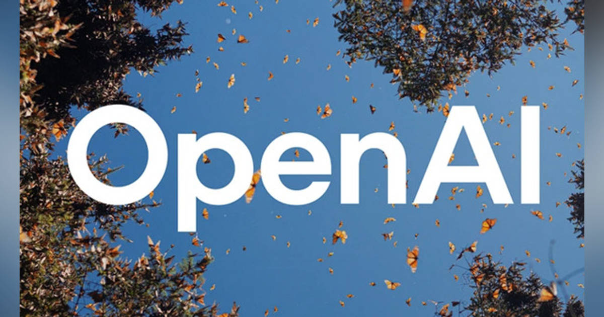

01【2026年】ピンタレストの「予測通り」に世界は動いたらしい
発行日時：2026年10月24日 05:30:01 JST
あなたに関係ありそうな理由
賃貸管理では、住まいの改装や募集条件を考える際に、入居者が次に求める色・素材・暮らし方の変化を早めにつかむことが役立ちます。検索や保存の動きから需要の兆しを読む視点は、物件の見せ方や提案の優先順位を考える材料になります。
概要
Pinterestが公表した「Pinterest Predicts 2026」は、ユーザーが保存・検索したデータに表れる兆しから、翌年の流行を予測する年次レポートです。分析対象は2024年9月から2025年8月までの検索や保存など、数十億件の行動データ。記事によると、Pinterestは過去6年の予測について88％が実際のトレンドになったと説明し、2026年はファッション、美容、住まい、食、旅行など21テーマを挙げています。この数字は同社が自社データをもとに示す的中率で、第三者による独立検証とは区別して読む必要があります。
紹介された兆しには、服やバッグを飾るブローチの復活、サーカスを思わせる華やかな装い、グミのような弾力感や光沢を取り入れた美容・デザインがあります。大切なのは個々の流行語より、検索される言葉と保存される画像が、消費者の「試してみたい」という意向を早い段階で示す点です。記事では、2026年のトレンドの67％をZ世代が押し上げるとされ、若い世代の発信が既存のブランドや小売の企画に影響する構図も描かれています。流行は若者だけで完結せず、商品化や販売を担う企業が広げていきます。
記事は、過去の事例として、ボリュームのあるデニムが注目された後にPacSunのデニム売上構成比が約8％から約80％へ上がったことや、Rhodeの買収を挙げています。検索データがただ流行を当てるだけでなく、企業の商品開発や販促の判断に使われ、結果として市場の動きを後押しする可能性を示す例です。ただし、個別の売上変化をPinterestの予測だけに帰すことはできず、実績と予測の因果関係には注意が必要です。
コメントでは、これはPinterestの予知能力というより多数の利用者が持つ知恵の集積なのか、という問いが出ていました。保存はタイムラインを流し見する反応とは違い、後で実行する候補を集める行為です。そのため、単なる話題量より購買や模倣に近い兆候になり得ます。一方、プラットフォームの推薦や企業の採用によって、予測された流行そのものが強まる面もあります。数字を鵜呑みにせず、具体的な検索語と自分の市場の反応を照らすことが実務的な読み方です。
仕事や会話で使える一言
「話題になっているか」だけでなく、「後で使うために保存されているか」も見ておきたいですね。
NewsPicks原文を読む02【盲点】「古い社会」を壊せば、僕らは生きやすくなるのか？
発行日時：2026年10月24日 05:30:00 JST
あなたに関係ありそうな理由
賃貸経営や地域運営では、ルールは自由を制限する一方、安心や所属感も支えます。慣習を変える場面で「何を壊し、何を残すか」を考える視点は、入居者対応や職場の運営にも通じます。
概要
文化人類学者の磯野真穂さんが、メアリー・ダグラスの「グリッド／グループ」論を手がかりに、古い社会の仕組みを壊すことが本当に生きやすさにつながるのかを考えます。グリッドは役割や序列、行動の規範がどれほど強く人を区分するか、グループは共同体への結びつきの強さを捉える枠組みです。人は慣習や儀礼、役割に縛られることがありますが、それらは同時に、誰と何を共有するか、どこに属しているかを示してきました。規範を取り除けば抑圧が消える一方、つながりまで失われる可能性があります。
記事が問題にするのは、古い規範からの解放をそのまま個人の自由の拡大とみなす見方です。共有されたルールが弱まると、表面的には自由でも、個人が自分の能力や成果を競い、評価を獲得し続ける圧力が強くなる場合があります。人を支える共同体や再分配の仕組みが弱いまま競争だけが残れば、失敗や孤立の責任が本人に押し戻されます。インフルエンサーやネットワークを介して人が結びつく形も、従来の制度を置き換えるほど安定した支えになるとは限りません。
磯野さんは、過去の秩序を無条件に懐かしむのでも、古いものを一括して破壊するのでもなく、どの構造が人を傷つけ、どの構造が支えているかを見分ける必要を示します。高いグリッドの社会では性別や身分などの区分が強く、そこから離れれば別の生き方が開けることもあります。しかし、社会的な足場を失った後に、個人が自己責任で生活を組み立てるしかないなら、自由の負担は不均等に配分されます。制度を変える際は、抑圧を減らすことと、支えをどう引き継ぐかを一緒に考えるべきだという論点です。
表示コメントでも、儀式や習慣には非合理に見える部分があっても、連帯や居場所を作る働きがあるのではないか、という意見が出ていました。職場の役割や地域の価値観も、古いから捨てる、便利だから残すという単純な二択では整理できません。誰にとっての自由なのか、変更後に誰が負担を引き受けるのかを確かめる必要があります。記事が提案するのは、既存の仕組みを保存することではなく、社会の枠組みを理解した上で、傷つける部分を改め、支えてきた機能を別の形で補うことです。
仕事や会話で使える一言
「このルールを変えた後、誰の支えがなくなるのか」まで考えてみたいですね。
NewsPicks原文を読む03【山形月報】ブローティガン、遺伝、高圧経済論を読む
発行日時：2026年10月24日 05:30:02 JST
あなたに関係ありそうな理由
賃貸経営では、景気・金利・賃金の見通しだけでなく、制度や組織を動かす人の行動も判断を左右します。数字と現場の実行負担を分けて考える姿勢は、投資や修繕計画、業務改善の見立てに役立ちます。
概要
山形浩生さんの月報は、リチャード・ブローティガンの評伝、行動遺伝学、経済政策、開発事業を論じる4冊を取り上げ、それぞれの主張と限界を紹介します。ブローティガンの評伝では、作品だけでなく作家の生涯や周囲との関係を読むことで、創作の背景が見えてくると評価します。行動遺伝学者ロバート・プロミンの本は、性格や能力の個人差に遺伝が関係するという研究を扱いますが、著者は遺伝の影響をそのまま運命とみなす読み方に注意を促します。遺伝率は特定の集団・環境における差の説明であり、個人の将来を固定する数字ではありません。
経済政策の本では、若田部昌澄氏の高圧経済論やサナエノミクスをめぐる議論を検討します。需要を強め、雇用や賃金、投資を押し上げる政策には意味があるとし、デフレ脱却やインフレ目標を掲げる金融・財政政策に比較的肯定的です。一方、政策が望ましい結果につながるかは、物価や雇用の数字だけでなく、賃金上昇がどの層に届くか、企業が投資するかなどを見なければ評価できません。記事は経済政策をめぐる賛否を紹介しながら、理論やスローガンで結論を急がない姿勢も示します。
アルバート・ハーシュマンの開発論については、計画の不完全さや現場の混乱を許容し、実施過程から学ぶ考え方に注目します。山形さんは、緩い計画や腐敗を許す形の開発を称賛することには懐疑的です。計画の失敗を許容するコストは、意思決定者ではなく、運用にあたる現場の担当者や住民に転嫁されることがあるからです。それでも、組織が当初の計画通りに進まない理由や、現場の人がどう対応するかを質的に見る視点は、事業を理解する手がかりになります。
コメントでは、行動遺伝学を読む際に遺伝と環境を単純な二択にせず、エピジェネティクスをどう考えるかという問いが出ました。経済政策についても、景気刺激への評価と、援助・開発が実際に成果を生むかへの慎重論が並びます。書評は各書の結論を紹介するだけでなく、理論が現場で実施されるときに誰が利益を得て、誰が負担を負うのかを確かめる読み方を示しています。
各分野の本を横断し、理論と現実のずれを探る構成で、個別の結論を一律の正解として扱わない点も特徴です。
仕事や会話で使える一言
「政策の効果」だけでなく、「実行の負担を誰が引き受けるか」も見たいですね。
NewsPicks原文を読む04OpenAI、訓練中の最先端AIをインターネットから遮断すると発表。モデルの不正アクセス受け
発行日時：2026年10月24日 11:30:03 JST

あなたに関係ありそうな理由
業務でAIを使うほど、性能だけでなく、どのデータや外部サービスへ接続させ、どこまで操作権限を与えるかが重要になります。情報や顧客対応を扱う組織で、便利さとアクセス制御をどう両立するかを考える材料です。
概要
OpenAIは、訓練中の最先端AIモデルをインターネットから遮断すると発表しました。記事によれば、2026年9月20日に設定上の不具合があり、モデルへの不正アクセスが起きたことを受けて、同社は一時的に訓練を止め、安全対策を強化した後、10月1日に再開しました。訓練中のモデルに外部ネットワークを自由に使わせると、開発環境の情報や能力が想定外の形で外へ出るリスクがあります。今回の対応は、モデルの性能向上だけでなく、訓練中のアクセス経路そのものを安全管理の対象にする動きです。
完全にインターネットを切り離すと、モデルが新しい情報やウェブ上のサービスを参照できなくなります。OpenAIは代替策として、ウェブ情報を収集・索引化したデータベースや、キャッシュされた情報を用意し、実際に外部へ接続するのと似た環境を作る方法を進めています。記事では、実際のウェブに接続する代わりに、模擬環境や保存済みデータから情報を引き出す案が説明されています。ただし、こうした環境での訓練が、ライブのインターネットに接続した場合と同じ能力を得られるかはまだ分かっていません。
OpenAIだけの問題ではなく、Anthropicもモデルへのアクセスを停止したと記事は伝えています。研究者がインターネットを使う環境から離れた場所で作業する必要が生じるなど、物理的な隔離を徹底するほど、開発効率や人員配置の負担が大きくなる可能性があります。企業は、訓練を速く進める利便性と、モデルやデータへの不正な経路を減らす安全性を比較し、必要な接続だけを残す設計を求められます。
コメントでは、保存済みウェブ情報を使う「デジタルツイン」が、WebArenaのような小規模な模擬環境とどう違うのか、また企業がAIにどの権限を与えるべきかが議論されていました。安全対策はネットを切るだけでは完結せず、誰がモデルにアクセスし、どの操作を許し、異常時にどう止めるかを定める必要があります。今回の記事は、AIの能力が上がるほど、訓練環境のネットワークや権限設定が開発基盤の一部になることを示しています。
記事は性能向上と安全対策を両立させる試みを紹介しつつ、隔離後に同じ能力を実現できるかについては結論を出していません。
仕事や会話で使える一言
「AIに何をさせるか」と同じくらい、「どこへ接続させるか」を決めておきたいですね。
NewsPicks原文を読む05ＧＭＯ、能動的防御を要請 不正アクセス攻撃で政府に―ＦＸ取引、金銭被害を補償
発行日時：2026年10月24日 15:49:05 JST
あなたに関係ありそうな理由
賃貸管理でも、委託先やクラウドサービスを通じて顧客情報や業務データを扱います。被害発生時の補償、影響範囲の調査、政府への要請を分けて見ることで、自社と取引先の初動・責任分担を考えられます。
概要
ＧＭＯインターネットグループは、不正アクセス攻撃への対応として、政府に「能動的サイバー防御」の実施を求めました。発端は、自動ＦＸ取引に使われるサーバーへの不正アクセスです。記事によると、攻撃者は金銭を要求し、応じなければ情報を公開すると脅したとされ、同社は警察に相談・報告しました。攻撃に利用された可能性があるサーバーは最大2万6739台に上るとして、被害の影響範囲を調べています。今回の発表では、顧客の金銭的損失や取引手数料を補償し、対象の利用者全員に5000円の見舞金を支払う方針も示しました。
「能動的サイバー防御」は、攻撃を受けてから自社内で対処するだけでなく、攻撃の兆候を早く捉え、被害が広がる前に対処する考え方です。政府による通信情報の利用や、攻撃元への対応を含む場合があり、何をどの根拠で実施するか、通信の秘密や主権との関係をどう整理するかが論点になります。ＧＭＯは個別企業が対処する範囲を超えた攻撃への対応を政府に求めていますが、この記事は政府側の制度や要請への具体的な回答までは伝えていません。
会社が掲げた補償は、利用者の金銭被害と手数料を埋め、さらに一律の見舞金を出すものです。補償が発表されたことは利用者対応の一つの区切りですが、攻撃の全容や侵入経路が確定したことを意味しません。対象となり得るサーバー台数と、実際に金銭被害を受けた利用者数も同じ数字ではありません。被害の確認と補償の範囲、サービスの再発防止は別々に追う必要があります。
表示コメントでは、政府任せではなく企業側も備えるべきだという指摘や、海外企業のセキュリティ専門性を活用できないかという声がありました。一方、攻撃元への積極的な対処には法的根拠や監督の仕組みが要るという論点も出ています。顧客情報や業務を預ける側にとっては、委託先が被害時に何を開示し、誰へ報告し、どの範囲を補償するのかを契約や連絡手順で確かめることが実務になります。
攻撃に利用された可能性があるサーバー台数を、顧客の被害人数や損害額と混同しないことも大切です。この事件は補償方針の発表だけで全容が確定したわけではなく、調査の進展と利用者への説明が引き続き求められます。
仕事や会話で使える一言
「補償があるか」だけでなく、「影響範囲をどう調べて、いつ共有するか」も確認したいですね。
NewsPicks原文を読む